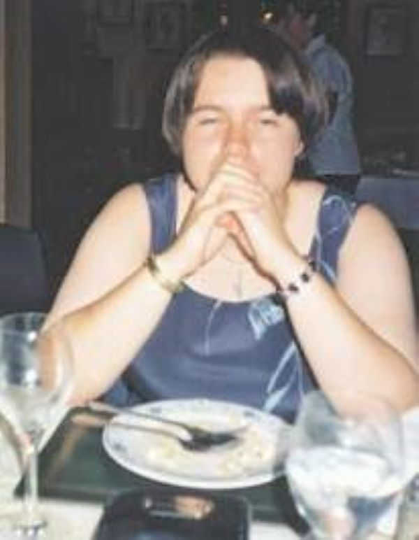
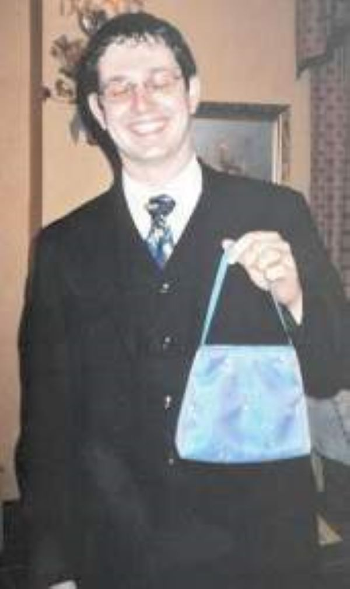
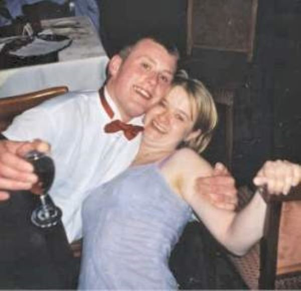
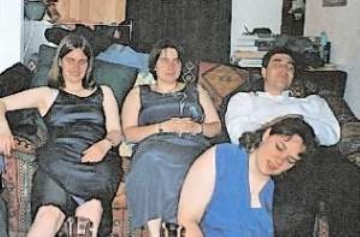
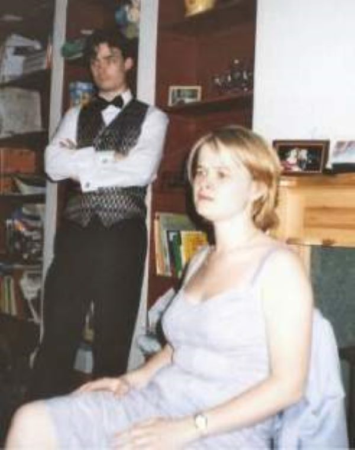
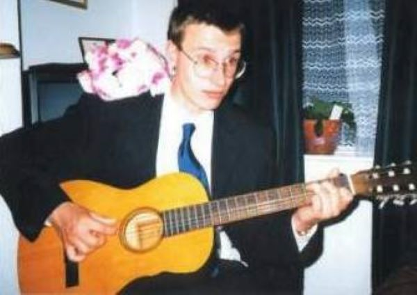

Afterwards

Don’t you dare take a picture of
me

Nice handbag, Simon!

Oh look I told you not to let them
near the wine

Zonked!

Jude and her bodyguard

Bagpuss was a saggy old cloth cat.
A bit loose at the seams, but David loved him